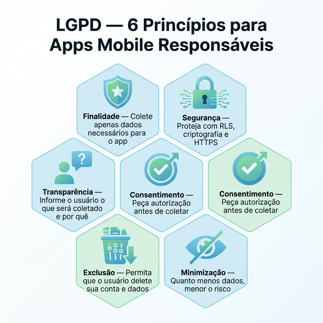
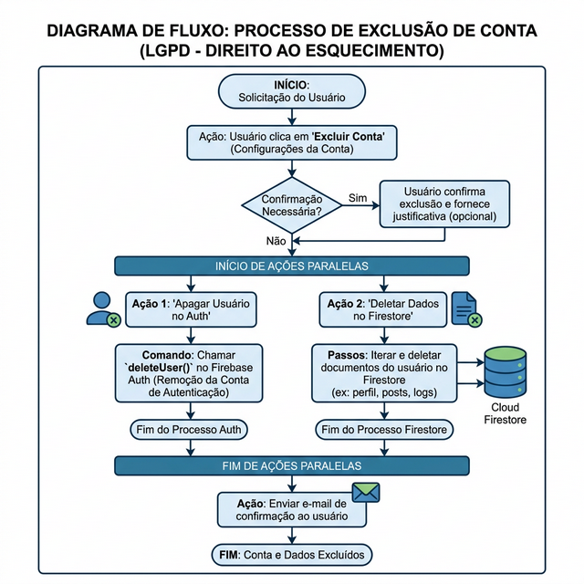
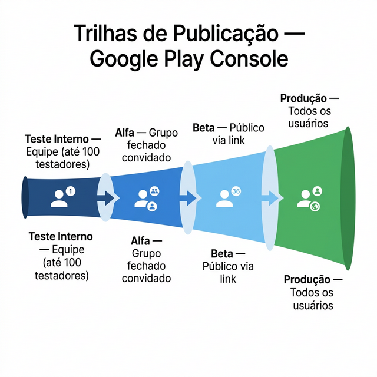

SEMANA 13 – Privacidade, LGPD e Acessibilidade
Nesta semana, você irá estudar boas práticas de segurança e acessibilidade para apps mobile, e iniciar o processo de publicação na Google Play Console com os testes fechados (alfa) e abertos (beta).
Um app pronto para o mercado não é apenas funcional — ele é seguro, acessível e cumpre as políticas das lojas de aplicativos. Esta semana aborda esses três pilares fundamentais antes da publicação final.
Fonte: IBGE (2022); Google Play Policy Center; LGPD (Lei 13.709/2018). |
13.1 Segurança em Apps Mobile
| Prática | Como Implementar |
|---|---|
| Nunca armazenar senhas em texto puro | O Firebase Auth já usa bcrypt automaticamente para hashes de senha |
| Usar HTTPS em todas as chamadas | O Firebase usa HTTPS por padrão; não use URLs HTTP em API Calls |
| Validar dados no backend | Use Security Rules do Firestore, não confie apenas no frontend |
| Não expor chaves privadas | Nunca use a service_role key no código do app |
| Session timeout | Configure o tempo de expiração do token no Firebase |
LGPD e Proteção de Dados
A LGPD (Lei Geral de Proteção de Dados Pessoais — Lei 13.709/2018) estabelece obrigações para qualquer app que trate dados pessoais de brasileiros. Os principais princípios são:
- Finalidade: coletar dados apenas para fins específicos e legítimos.
- Minimização: coletar apenas os dados estritamente necessários.
- Transparência: informar ao usuário quais dados são coletados e como.
- Segurança: proteger os dados com medidas técnicas adequadas.
A Figura 13.1 resume visualmente os 6 princípios da LGPD mais relevantes para apps mobile, facilitando sua aplicação prática durante o desenvolvimento e nos slides de apresentação do projeto.

O Direito ao Esquecimento: Exclusão de Conta
Um dos direitos assegurados pela LGPD é o de exclusão dos dados. No seu aplicativo, o usuário deve ter a opção clara de excluir sua conta. Do ponto de vista técnico em nossa stack, isso exige uma operação dupla e síncrona: excluir o registro de autenticação (Firebase Auth) e apagar o documento do usuário junto com suas coleções aninhadas (Firestore).

13.2 Acessibilidade em Apps Mobile
Acessibilidade garante que o app possa ser usado por pessoas com diferentes capacidades, incluindo deficiência visual, motora ou cognitiva.
|
Acessibilidade (a11y): design e desenvolvimento de produtos que podem ser usados por todas as pessoas, independentemente de suas capacidades ou limitações físicas. O número 11 representa as 11 letras omitidas entre o "a" e o "y" de "accessibility". |
| Prática | Por Que Importante |
|---|---|
| Contraste de cores adequado | Facilita a leitura para pessoas com baixa visão (ratio mínimo 4.5:1) |
| Textos legíveis (mín. 14sp) | Reduz a necessidade de zoom e facilita a leitura |
| Rótulos em imagens e ícones | Leitores de tela (TalkBack) precisam de texto descritivo |
| Áreas de toque grandes (mín. 48×48 dp) | Facilita o toque para pessoas com tremores ou dedos grandes |
| Não depender apenas de cores | Pessoas com daltonismo podem não distinguir verde de vermelho |
13.3 Publicação: Alfa, Beta e Produção
A Google Play Console oferece três trilhas de publicação, permitindo testar o app com um número controlado de usuários antes do lançamento público. A Figura 13.3 ilustra a progressão das trilhas, do grupo mais restrito ao público geral.

| Trilha | Público | Objetivo |
|---|---|---|
| Teste Interno | Até 100 testadores convidados por e-mail | Testes iniciais da equipe |
| Alfa (Fechado) | Grupo fechado convidado | Testes com usuários selecionados |
| Beta (Aberto) | Qualquer usuário pode entrar via link | Testes com público maior antes do lançamento |
| Produção | Todos os usuários da Play Store | Lançamento oficial público |
|
Para publicar na Google Play, é necessária uma conta de desenvolvedor Google Play (taxa única de US$ 25). O cadastro leva até 48 horas para ser processado. Se sua instituição já tiver uma conta, use-a para o projeto. Caso contrário, o professor irá orientar a alternativa. |
13.4 Entregável da Semana
|
Na próxima semana, você irá finalizar a documentação técnica do projeto e preparar o build final para produção.
13.5 Estudo de Caso: FinanCampus
Veja as verificações de segurança e acessibilidade do FinanCampus.
|
Checklist de segurança (todos verificados):
Checklist de acessibilidade:
App publicado no Teste Interno com 4 testadores (os próprios membros do grupo). APK instalado via Play Console e 2 bugs de usabilidade identificados e corrigidos. |